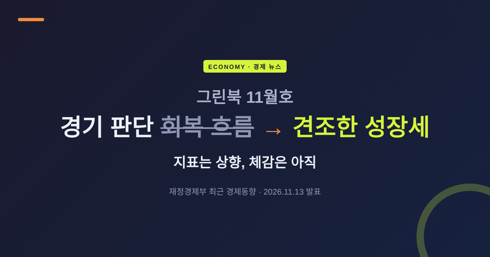
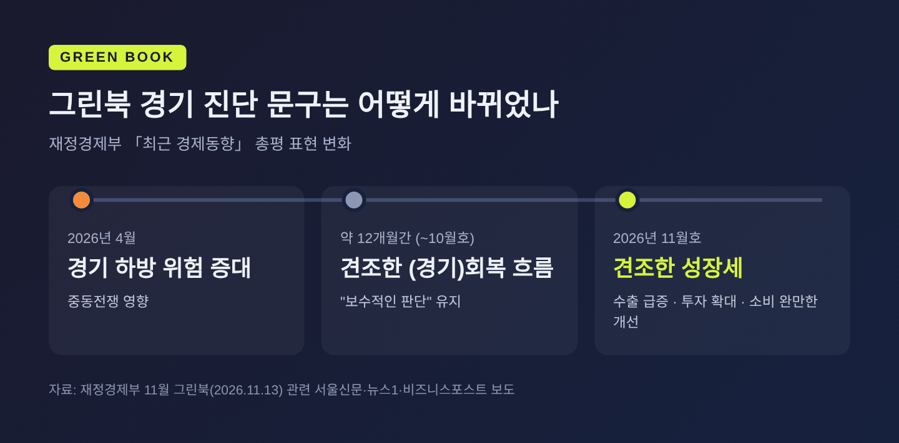
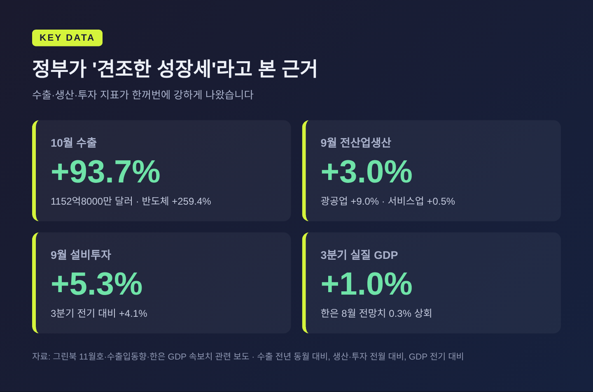
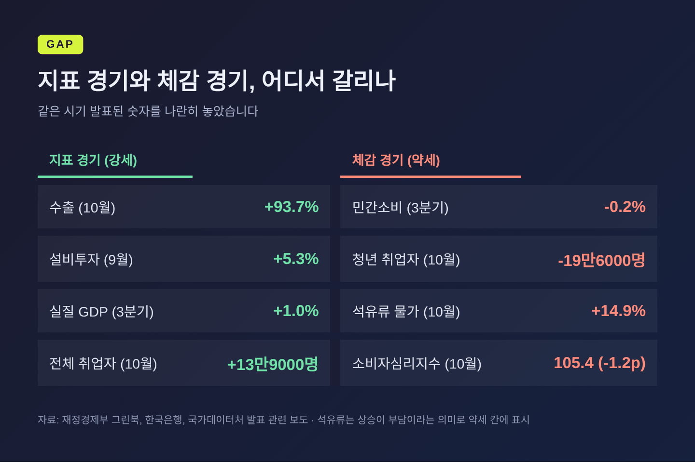
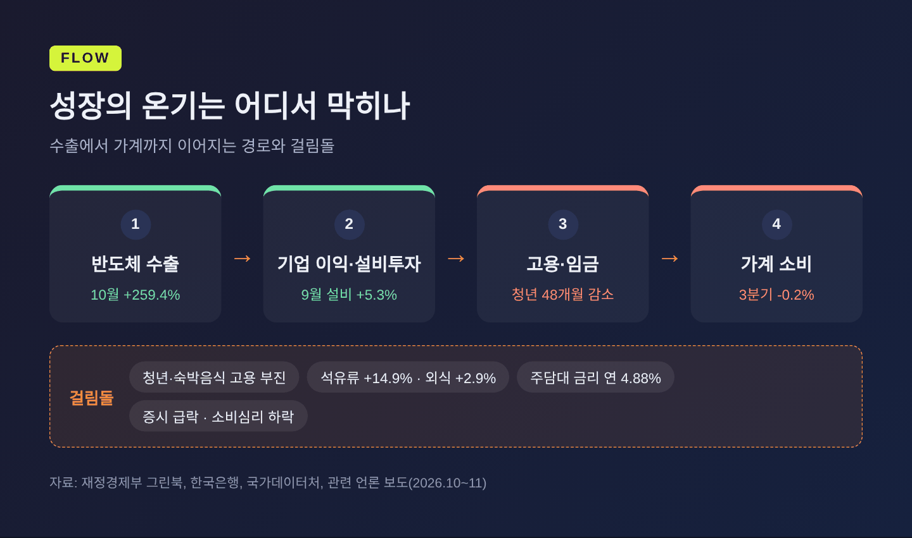
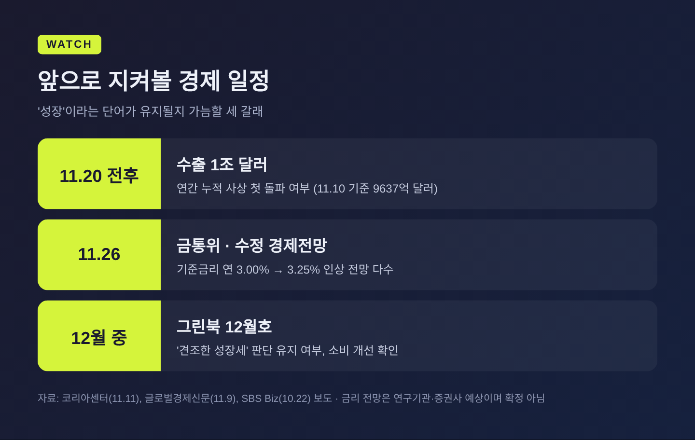

그린북 11월호 경기 판단 '견조한 성장세'로 상향, 체감은 왜 아직일까

이번 글에서는 재정경제부가 11월 13일 내놓은 「최근 경제동향(그린북) 11월호」를 정리해 보겠습니다. 정부는 1년 가까이 써온 '회복' 대신 '성장'이라는 단어를 골랐습니다. 그런데 장바구니와 취업 시장의 온도는 그 말과 거리가 있습니다. 그 간격이 왜 생기는지까지 함께 살펴봅니다.
3줄 요약
- 그린북 11월호의 경기 진단이 "견조한 회복 흐름"에서 "견조한 성장세"로 한 단계 올라갔습니다.
- 근거는 10월 수출 1152억8000만 달러(전년 대비 93.7% 증가), 9월 설비투자 5.3% 증가 같은 수출·투자 지표입니다.
- 반면 3분기 민간소비는 0.2% 줄었고, 청년 취업자는 48개월째 감소했으며, 석유류 물가는 14.9% 올랐습니다.
■ 정부가 바꾼 단어 하나, '회복'에서 '성장'으로
임홍기 재정경제부 경제분석과장은 13일 정부세종청사에서 11월 그린북을 발표했습니다. 총평은 이렇습니다. 수출이 큰 폭 증가하고 투자 증가세가 확대되는 가운데, 소비가 완만하게 개선되며 "견조한 성장세가 이어지는 모습"이라는 것입니다.
서울신문 보도에 따르면 정부는 지난 12개월 동안 '경기회복 흐름'이라는 표현을 유지해 왔습니다. 지난 4월에는 중동전쟁 여파로 '경기 하방 위험 증대'라는 경고까지 내놓았습니다. 뉴스1은 이번 변화를 "'회복'→'성장' 1년 만에 상향"이라고 요약했습니다.
임 과장은 그동안 중동전쟁의 불확실성 때문에 "보수적인 판단을 이어왔다"고 설명했습니다. 미국 데이터센터 투자 축소 같은 AI 관련 우려에 대해서는 실물 영향이 "아직 나타나지 않고 있다"고 답했습니다.
예전엔 '회복 중'이라는 조심스러운 표현이었습니다. 지금은 '이미 성장 궤도에 있다'는 자신감이 담겼습니다. 정부 공식 진단에서 단어 하나가 바뀌는 일은 드뭅니다. 그만큼 지표가 강하다는 신호로 읽힙니다.

■ 숫자로 본 '견조함' — 수출과 투자가 이끈다
정부 판단의 바탕에는 수출이 있습니다. 10월 수출은 1152억8000만 달러로 1년 전보다 93.7% 늘었습니다. 일평균으로도 52억4000만 달러, 76% 증가입니다. 반도체가 564억4000만 달러로 259.4% 뛰었고, SSD를 포함한 컴퓨터 수출은 496.6% 늘었습니다. 무역수지는 425억 달러 흑자로 21개월째 흑자를 이어갔습니다.
1~10월 누적 수출은 9300억 달러입니다. 11월 1~10일에도 수출이 111.9% 늘어나, 이 속도라면 11월 20일 전후 사상 첫 연간 수출 1조 달러를 넘길 것으로 보입니다.
생산과 투자도 함께 움직였습니다. 9월 전산업생산은 전월보다 3.0% 늘었습니다. 광공업이 9.0%, 건설업이 5.8% 증가했고 서비스업은 0.5%에 그쳤습니다. 9월 설비투자는 5.3% 증가했고, 3분기 전체로는 전기 대비 4.1% 늘었습니다.
한국은행이 10월 27일 발표한 3분기 실질 GDP 성장률은 전기 대비 1.0%였습니다. 한은의 8월 전망치 0.3%를 세 배 넘게 웃돈 수치입니다.

■ 그런데 왜 체감은 차가울까 — 네 가지 이유
지표는 뜨겁습니다. 하지만 이번 그린북 안에도 체감 경기를 식히는 숫자가 함께 들어 있습니다.
첫째, 소비가 성장을 따라가지 못합니다. 9월 소매판매는 3.6% 늘며 7월(-2.5%)과 8월(-1.8%)의 감소를 끊었습니다. 그러나 3분기 민간소비는 전기 대비 0.2% 줄었습니다. 2022년 4분기 이후 처음 나온 감소입니다. 뉴스토마토 분석에 따르면 3분기 성장에 대한 민간 부문 기여도는 2분기 1.1%포인트에서 0.2%포인트로 줄었고, 정부 부문은 -0.5%포인트에서 0.8%포인트로 올라섰습니다. 한은은 주식시장 조정에 따른 금융서비스 감소와 완성차 파업에 따른 출고 지연을 특이 요인으로 들었습니다. 이 요인이 없었다면 민간소비가 0.4% 늘었을 것이라는 추정도 덧붙였습니다.
둘째, 일자리의 결이 다릅니다. 10월 취업자는 1년 전보다 13만9000명 늘었습니다. 그러나 증가분은 60세 이상(+19만6000명)과 보건·사회복지업(+24만9000명)에 몰렸습니다. 청년층(15~29세) 취업자는 19만6000명 줄어 48개월 연속 감소했고, 청년 고용률은 42.9%로 1.7%포인트 떨어졌습니다. 숙박·음식점업은 13만7000명 줄었고, 제조업도 감소로 돌아섰습니다. 그린북이 "취약계층·부문의 어려운 고용 여건"을 따로 적은 이유입니다.
셋째, 기름값과 밥값이 오릅니다. 10월 소비자물가는 2.8% 올라 9월(2.9%)보다 조금 낮아졌습니다. 하지만 석유류가 14.9% 뛰며 전체 물가를 0.56%포인트 끌어올렸습니다. 가공식품과 외식도 각각 2.9% 올랐습니다. 채소 값이 11.2% 내려 평균을 눌렀을 뿐, 자주 사는 품목의 부담은 여전합니다. 근원물가도 2.8%를 기록했습니다.
넷째, 마음이 먼저 움츠러듭니다. 10월 소비자심리지수는 105.4로 9월보다 1.2포인트 내렸습니다. 향후경기전망 지수는 88로 2포인트 하락했습니다. 11월 6일에는 코스피가 장중 8% 넘게 빠지며 서킷브레이커가 발동했고, 6.02% 내린 5059.69로 마감했습니다. 은행 주택담보대출 금리는 연 4.88%로 2012년 4월 이후 가장 높은 수준까지 올랐습니다.

■ 배경과 쟁점 — '반도체 착시'인가, 시차의 문제인가
이 괴리를 두고 해석은 둘로 나뉩니다.
하나는 '착시'론입니다. 성장을 끌어올린 것이 반도체 수출과 설비투자, 그리고 재정 지출이라는 점을 근거로 듭니다. 3분기 실질 국내총소득(GDI)이 18.8% 늘었는데도 가계 소비로 이어지지 않았다는 점이 대표적입니다. 반도체 비중은 11월 초순 수출의 49.7%까지 올라왔습니다. 한 업종에 쏠린 성장은 그 업종이 흔들릴 때 함께 흔들립니다.
다른 하나는 '시차'론입니다. 9월 소매판매 반등, 10월 카드 국내승인액 증가율 5.9%(9월 2.3%), 국산 승용차 내수판매의 증가 전환(9월 -19.0%에서 10월 +2.0%)이 그 근거입니다. 정부가 소비를 "완만한 개선"으로 본 것도 이 흐름 때문입니다.
정부도 한계를 감추지는 않았습니다. 지난 9월 브리핑에서 임 과장은 내수 회복 속도가 수출·투자를 "따라가지는 못한다"고 인정한 바 있습니다. 이번 그린북에서도 3대 메가프로젝트, 7대 SEED, 한국형 녹색대전환(K-GX), 서비스산업 육성으로 성장 저변을 넓히겠다고 밝혔습니다. 그리고 "성장의 온기가 경제 전반으로 확산될 수 있도록 민생 안정과 양극화 완화를 위한 정책 노력을 강화하겠다"고 덧붙였습니다. 다만 각 프로젝트의 구체적인 내용과 일정은 이번 발표에서 자세히 확인되지 않았습니다.
이 대목은 지난 12일 다룬 10월 고용동향, 13일 다룬 코스닥 700선 공방과도 맞닿아 있습니다. 청년 일자리와 증시 변동성이 결국 '체감'의 다른 이름이기 때문입니다.

■ 전망 — 11월 26일 금통위가 다음 관문
다음 관문은 11월 26일 한국은행 금융통화위원회입니다. 기준금리는 현재 연 3.00%입니다. 한은은 7월과 8월 연속 인상한 뒤 10월 22일 7명 만장일치로 동결했습니다. 신현송 총재는 당시 성장과 물가의 상방 위험이 커졌다고 언급했고, 긴축 기조가 끝나지 않았다는 신호를 남겼습니다.
시장은 추가 인상 쪽에 무게를 둡니다. 우리금융경영연구소는 0.25%포인트 올린 3.25%를 예상했습니다. 반도체 수출 호조, 2%대 후반 근원물가, 수도권 집값 상승을 근거로 들었습니다. 하나증권·한화투자증권·iM증권도 11월 인상을 점쳤습니다. 같은 날 나올 한은의 수정 경제전망에서 성장률이 얼마나 올라갈지도 관심사입니다.
여기에 역설이 하나 있습니다. 경기가 '견조'할수록 금리 인상의 명분은 커집니다. 그런데 금리가 오르면 대출을 안고 있는 가계의 체감은 더 무거워집니다. 10월 금통위 의사록에도 성장의 과실이 일부 부문에 집중되고 취약차주 연체율이 높다는 지적이 담겼습니다.
앞으로 지켜볼 일정은 이렇습니다.
- 11월 20일 전후: 연간 수출 1조 달러 돌파 여부
- 11월 26일: 금통위 기준금리 결정과 수정 경제전망
- 12월 그린북: '견조한 성장세' 판단 유지 여부, 소비 개선 흐름 확인

정리하면 이렇습니다. 이번 그린북은 한국 경제의 엔진이 다시 힘을 내고 있다는 사실을 공식 확인했습니다. 다만 그 힘이 아직 바퀴 전체에 고르게 닿지 않았다는 사실도 함께 보여줍니다.
"지표의 성장과 생활의 성장은 다른 속도로 움직인다."
다음 달 그린북에서 정부가 이 단어를 지킬 수 있겠냐고 물으신다면, 수출보다 청년 일자리와 장바구니 물가를 먼저 보겠다고 답하겠습니다.
이 글은 공개된 정부 발표와 언론 보도를 바탕으로 한 경제 해설이며, 특정 금융상품이나 종목에 대한 투자 권유가 아닙니다. 투자 판단과 그 결과의 책임은 투자자 본인에게 있습니다.
출처
- 재정경제부 「2026년 11월 최근 경제동향」 관련 보도: 머니투데이(11/13), 서울신문(11/13), 뉴스1(11/13), 비즈니스포스트(11/13)
- 수출: 뉴시스(11/1), 코리아센터(11/11)
- 고용: MTN(11/11)
- 물가: SBS Biz(11/3)
- GDP: 대한민국 정책브리핑(10/27), 뉴스토마토(10/27)
- 심리·증시: 뉴스토마토(10/27), 코리아센터(11/3), 아시아경제(11/6)
- 금통위: SBS Biz(10/22), 코리아센터(11/10), 글로벌경제신문(11/9)
- 9월 그린북 참고: 아이뉴스24(9/11)
#그린북 #최근경제동향 #견조한성장세 #체감경기 #청년고용 #소비자물가 #금통위 #기준금리 #수출1조달러